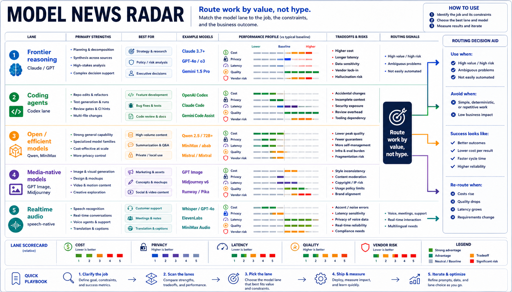
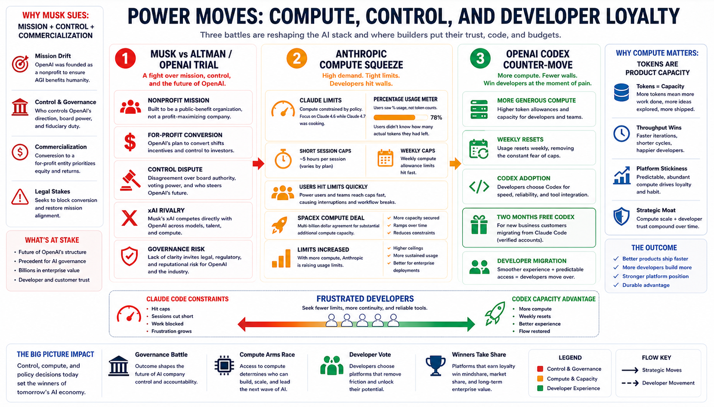

Model News
New models released, with a focus on capability, pricing, and benchmarks.

Model choice is now an execution-path decision: reasoning, coding, local/open, media, and realtime lanes each fail differently.
Put routing, evals, fallback, and logs in front of the model instead of wiring one vendor directly into workflows.
Track latency, rate-limit exposure, cost per run, privacy boundary, and recovery path for every model lane.
Agents
A standing section for agents, agentic workflows, agent OS ideas, orchestration, tools, roles, artifacts, validation, and practical automation.
Agent Failure and Control Map
Why agents fail
What makes them useful
Agent adoption is moving from demos to quota, billing, security classification, and permission design.
Define input contracts, allowed tools, output artifacts, review gates, and rollback paths before adding autonomy.
Meter token use, retries, long-context runs, external sends, and tool calls separately from ordinary chat usage.
Platform Plays
News on Google, Microsoft, OpenAI, Anthropic, Meta, Perplexity, Chinese/opensource companies, and other platforms pushing AI into everyday work surfaces.

AI is moving into surfaces that already own user intent: browser, search, docs, design tools, laptops, ads, and assistants.
Expose tools through stable actions, permissions, and event logs so embedded assistants can be inspected and tested.
Measure answer quality, attribution, task completion, conversion effects, and user trust when AI becomes the front door.
AI Infrastructure
Compute access, chips, power, memory, and data-center capacity became product strategy this week.

Rate limits, power, memory, launch capacity, and GPU access now show up as user-visible product behavior.
Design fallback behavior for vendor degradation, quota exhaustion, long queues, model swaps, and data-residency constraints.
Track cost and capacity per workflow, not just subscription totals or aggregate token spend.
Power Moves
A standing section for founder drama, lawsuits, acquisitions, surprise partnerships, platform politics, and industry titan maneuvering.

Vendor strategy is becoming architecture context: governance, compute partners, ad incentives, and developer lock-in affect system risk.
Map which vendors control your model, workflow state, data, IDE hooks, browser automation, ads, cloud, and compute path.
Keep portability plans for prompts, evals, tool contracts, logs, and source-of-truth data before a vendor becomes the workflow.